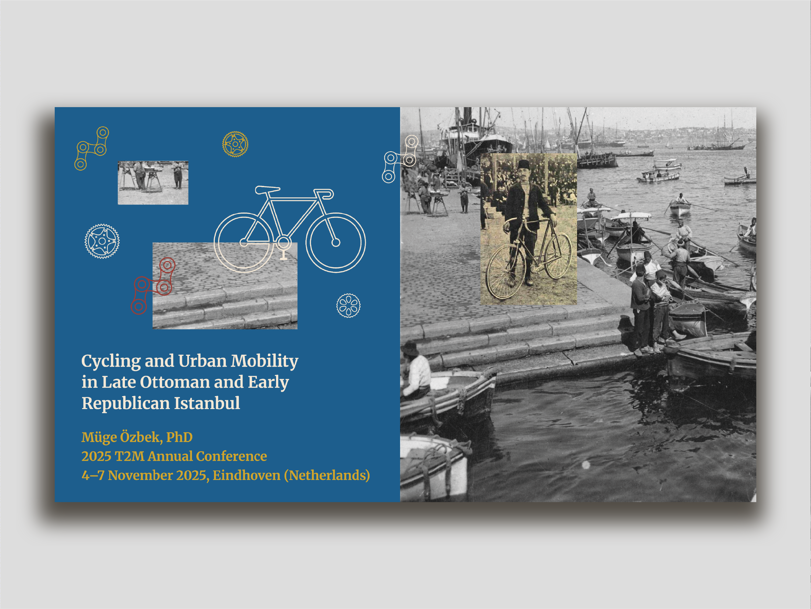
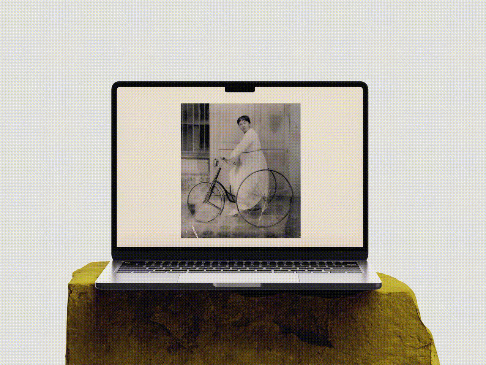
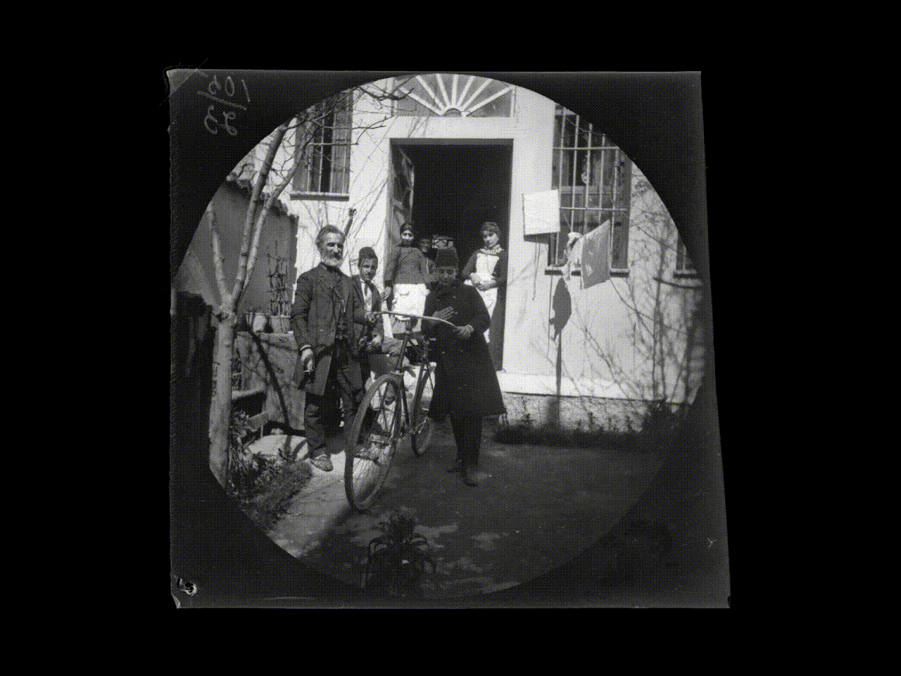
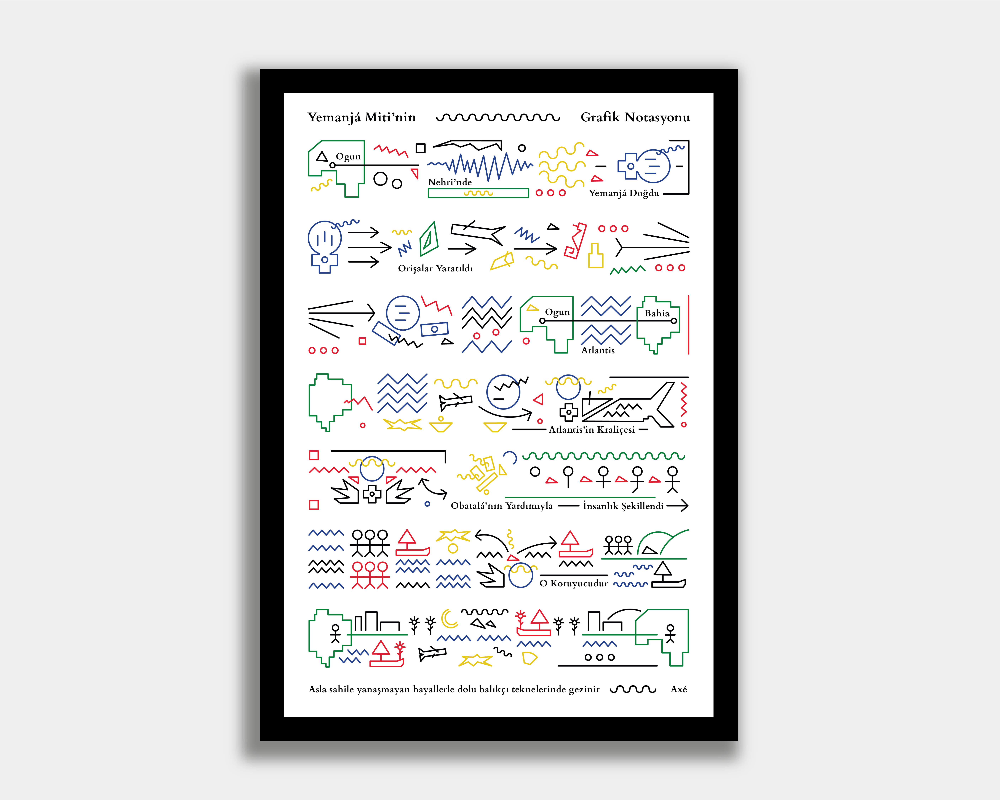
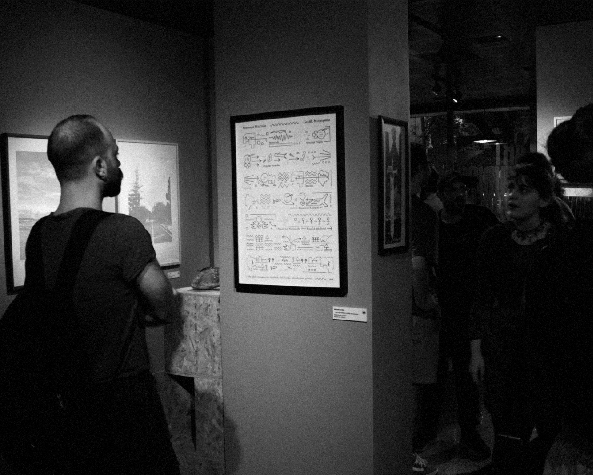
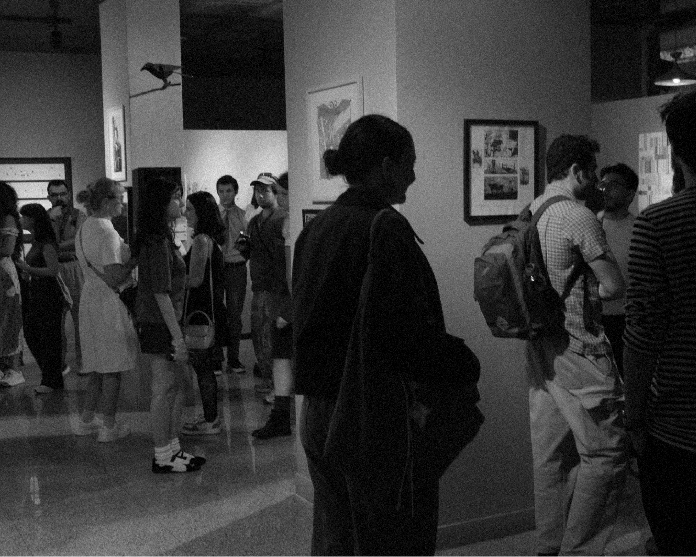

Cycling and Urban Mobility
Presentation Design, 2025
Why do some cities become cycling cities while others don’t? The Cycling Cities Experience sheds light on how policymakers, engineers, and social movements have shaped cycling mobility since the early 20th century. From 4–7 November 2025, the Bicycles Forever 2.0 exhibition and the T2M conference in Eindhoven brought together researchers and practitioners thinking about cycling cultures. I contributed by designing the visual presentation for Dr. Müge Özbek’s talk, “Cycling and Urban Mobility in Late Ottoman and Early Republican Istanbul.” Exploring the early history of cycling in Istanbul and integrating these insights into my design process was a truly meaningful experience for me.
Bisikletler ve Kentsel Hareketlilik
Sunum Tasarımı, 2025
Bazı kentler bisiklet şehri olurken bazıları neden olamıyor? The Cycling Cities Experience, politika yapıcıların, mühendislerin ve toplumsal hareketlerin 20. yüzyılın başından bu yana bisikletli ulaşımı nasıl şekillendirdiğine ışık tutuyor. 4–7 Kasım 2025’te Eindhoven’da düzenlenen Bicycles Forever 2.0 sergisi ve T2M konferansı bisiklet kültürü üzerine düşünenleri bir araya getirdi. Ben de Dr. Müge Özbek’in konferansta sunduğu “Cycling and Urban Mobility in Late Ottoman and Early Republican Istanbul” adlı çalışması için görsel sunum tasarımını üstlendim. İstanbul’da bisikletçiliğin erken tarihini keşfetmek ve bu bilgileri tasarım sürecime entegre etmek benim için gerçekten çok anlamlı bir deneyim oldu.






Graphic Notation of Yemanjá Myth
Digital Poster, 50 x 70 cm, 2025
Music can be represented outside of traditional notation systems, and using graphics is one such method. In this project, I retold the myth of Yemanjá, belonging to the Afro-Brazilian belief system Candomblé, through lines and rhythms inspired by graphic notation. This mythological narrative can be read intuitively by following the lines. The first line describes Yemanjá’s birth, while the last line shows that she is now the protector of fishermen and fertility.
This work was exhibited at UNITE’s Gathering Space from September 13– 27, 2025, and at Çekirdek Eskişehir’s Intersection from March 6–20, 2026.
Yemanjá Miti'nin Grafik Notasyonu
Dijital Afiş, 50 x 70 cm, 2025
Müzik, geleneksel notasyon sistemlerinin dışında da temsil edilebilir ve grafikleri kullanmak bu yöntemlerden biridir. Bu projede, bir Afro- Brezilya inanç sistemi olan Candomblé’ye ait Yemanjá mitini, grafik notasyondan ilhamla çizgiler ve ritimler üzerinden yeniden anlattım. Bu mitolojik anlatı, satırlar takip edilerek sezgisel olarak okunabilir. İlk satır Yemanjá’nın doğumunu anlatırken, son satır onun artık balıkçıların ve bereketin koruyucusu olduğunu gösterir.
Bu eser, 13-27 Eylül 2025 tarihleri arasında UNITE’nin Toplanma Alanı’nda, 06-20 Mart 2026 tarihleri arasında Çekirdek Eskişehir’in Interseciton’ında sergilendi.




The Camera, Grandma & Erzincan
Printed Book, 80 Pages, 16 x 20 cm, 2026
For this project, which was part of my Typography II course, students were asked to create a book showcasing the endemic plants of their hometowns. For this project, I took a virtual journey to Erzincan—my hometown, which I had never visited before—using Google Maps. When I arrived at my grandmother’s village in Iliç, I imagined meeting her there. This book features a narrative in which my grandmother introduces the village’s endemic plants to the Google Maps camera. Through this ASCII-based book, I reflected collectively on the concepts of technology, nature, emotions, and mechanization.
Kamera, Anneanne & Erzincan
Basılı Kitap, 80 Sayfa, 16 x 20 cm, 2026
Tipografi II dersimin projesi olan bu çalışmada, öğrencilerden memleketlerinin endemik bitkilerini tanıtan bir kitap yapmaları istenir. Bu çalışmada daha önce gitmediğim memleketim olan Erzincan'a Google Maps kamerasıyla bir yolculuk yaptım. Anneannem'in Iliç'e bağlı köyüne vardığımda, onunla karşılaşma hayali kurdum. Bu kitap, anneannemin Google Maps kamerasına köyünün endemik bitkilerini tanıttığı bir anlatıya sahiptir. ASCII ile döşenen kitapta teknoloji, doğa, duygular ve makineleşmek kavramları üzerine topluca düşündüm.

Perriot's Penguin Circus
Printed Book, 60 Pages, 21 x 18 cm, 2026
The artist’s book titled Perriot’s Penguin Circus is an example of my artistic approach, which juxtaposes real documents with fictional narratives. In this work, I construct a micro-history that exists somewhere between documentary and imagination by combining photographic findings with speculative dialogues and characters. This absurd journey, stretching from the ticket booth to the circus tent, is a visual scenario I have conceived around social joy and collective life.
Perriot'un Penguen Sirki
Basılı Kitap, 60 Sayfa, 21 x 18 cm, 2026
Perriot'un Penguen Sirki adlı sanatçı kitabı, gerçek belgelerle kurgusal anlatıları çarpıştıran sanatsal yaklaşımımın bir örneğidir. Çalışmada; fotoğrafik buluntuları spekülatif diyaloglar ve karakterlerle bir araya getirerek, belgesel ile hayal arasında kalan bir mikro-tarih inşa ediyorum. Bilet gişesinden sirk çadırına uzanan bu absürt yolculuk, toplumsal neşe ve kolektif yaşam üzerine kurguladığım görsel bir senaryodur.
Video Başlığı
in another messy universe
Digital Collage, 40 x 30 cm, 2026
I accompanied deniz atakan gürbüz’s article titled “queer hauntography of girl joy and all the messy places,” published in American Ethnologist, with a collage piece of my own. It was meaningful for me to explore the points where this narrative—centered on memory, space, and mourning—intersects with visual language.
Photographs: deniz atakan gürbüz, Collage: Mehmet Uysal
başka bir kargaşa evreninde
Dijital Kolaj, 40 x 30 cm, 2026
deniz atakan gürbüz'ün American Ethnologist bünyesinde yayımlanan "queer hauntography of girl joy and all the messy places" başlıklı makalesine, bir kolaj çalışmamla eşlik ettim. Hafıza, mekan ve yas üzerine kurulan bu anlatı ile görsel dilin buluştuğu noktaları keşfetmek benim için kıymetliydi.
Fotoğraflar: deniz atakan gürbüz, Kolaj: Mehmet Uysal

Selected Photos
Digital & analog, 2024 - 2026
Photographs drawn from my daily observations. The routines and absurdities of everyday life, and the act of living together—these are the things I focus on.
Seçilmiş Fotoğraflar
Dijital & analog, 2024 - 2026
Günlük gözlemlerimden çıkan fotoğraf kareleri. Gündelik hayatın pratikleri, absürtlükler ve birlikte var olmak baktığım yerlerdir.

Sketches
Pastels and ballpoint pens on paper, 2023 - 2025
Visual experiments, drawings, and process-based works.
Karalamalar
Kağıt üzerine pastel boya ve tükenmez kalem, 2023 - 2025
Görsel deneyler, çizimler ve süreç odaklı çalışmalar.

Mehmet Uysal

Mehmet Uysal (b. 2001, Istanbul) is a senior student in Psychology and Visual Communication Design at Istanbul Bilgi University.
He analyzes daily life practices through his multidisciplinary background, transforming urban experiences and stories into digital mapping, publications, and interfaces.
Mehmet Uysal (d. 2001, İstanbul), İstanbul Bilgi Üniversitesi’nde Psikoloji ve Görsel İletişim Tasarımı bölümlerinde son sınıf öğrencisidir.
Disiplinlerarası geçmişi sayesinde günlük yaşam pratiklerini analiz ederek, kentsel deneyimleri ve öyküleri dijital haritalama, yayınlar ve arayüzlere dönüştürüyor.